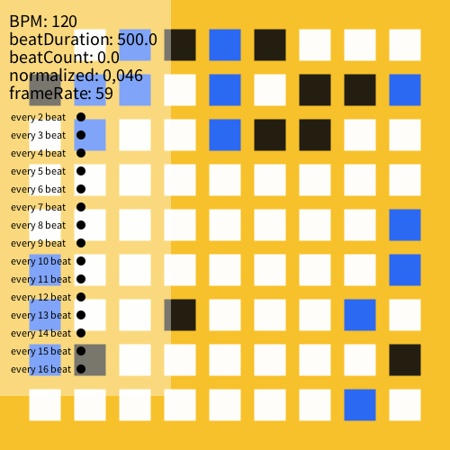

BPM functions
The BeatsPerMinute class provides the following main functions:
-
linear()function that returns a normalized linear progress value from 0 to 1 for any given amount of beats, or with a given delay:linear()returns progress in 1 beatlinear(4)returns progress in 4 beatslinear(4,3)returns progress in 4 beats, with a delay of 3 beats
-
ease()same aslinear()but does not use a linear progression but an 'eased' or 'smooth' one. Again, can be called without arguments, with 1 argument (duration in beats) or with two (duration and delay in beats). linearBounce()same aslinear()but goes from 0 to 1 to 0 in the same amount of time. Useful for shrinking or growing of visuals.easeBounce()same asease()but goes from 0 to 1 to 0 in the same amount of time. Useful for shrinking or growing of visuals.every[n]boolean that returns true every n beats. Returns true for the duration of 1 beat. Limited to a max of 16 beats.every_once[n]same asevery[n]but now the boolean returns true for only 1 frame. Useful for changing a variable once every n beats.getBPM()to return the current BPM.getBeatCount()to return the current beatcount.getSurfaceTitle()show information on BPM, beatCount and frameRate in your surface title. To be used in your main sketch likesurface.setTitle(bpm.getSurfaceTitle());
A more advanced progression function adsr() that uses attack, decay, sustain and release options to control the (linear) progression:
adsr(0.2)function that uses an attack of 20% to get from 0 to 1 and stay at 1 for the remainder of the beatadsr(0.2, 0.4, 0.5, 0.1)function that uses an attack of 20% to get from 0 to 1, a decay of 40% to get to 0.5, stay for 30% of the time at that 0.5 and uses a release of 10% to get from 0.5 to 0.adsr(0.2, 0.4, 0.5, 0.1, 2)similar as the previous one, but with an additional parameter for duration in beats. In this case to animate over 2 beats.adsr(0.2, 0.4, 0.5, 0.1, 2, 1)similar as the previous one, but with an additional parameter for delay in beats. In this case delay of 1 beat.
You can tweak the behaviour of this library with the following functions (you can also chain them when initializing your bpm object for clarity):
.setBPM(120)to change the amount of beats per minute for all calculations..showInfoPanel()to show the infopanel..setInfoPanelY(n)to offset the starting y-position of the infopanel by n pixels. Useful for when you have multiple infopanels to get them all lined up..setInfoPanelKey('u')to change the hotkey to toggle the infopanel. Useful for when you have multiple infopanels. Defaults to 'i'.-
.disableKeyPress()to disable listening for keypresses. If you don't disable keypresses, then these keypresses will work by default:0press once to reset timer, press multiple times to set the BPM to your 'press'-timing-lower bpm+raise bpm
Examples
You can find all these examples in Processing -> File - Examples - Contributed Libraries - VJMotion - BPM.
animatedSVG |
beatCount |
animatedSVG |
delay |
metronome |
randomcolor |
| randomGridSpots  |
rotatingSVG |
adsr |